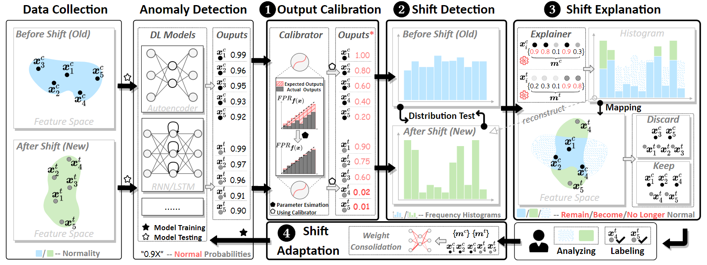

开放世界中的异常检测
论文精读: Anomaly Detection in the Open World: Normality Shift Detection, Explanation, and Adaptation
研究动机
在网络安全等领域，基于机器学习的异常检测系统已成为关键防御手段。这类系统通常建立在一个“封闭世界”假设之上：即训练数据与部署环境中的数据分布（distribution）是独立且同分布的 (i.i.d.)。然而，真实世界是“开放”的，系统环境、用户行为、网络协议等都在不断演变，导致数据分布发生变化，这种现象被称为概念漂移 (Concept Drift)。
传统的异常检测，特别是仅使用正常数据进行训练的零正例学习 (zero-positive learning)，虽然能有效识别未知的“异常”行为（如零日攻击），但当“正常”行为的模式发生变化时（即常态漂移, Normality Shift），系统会面临严峻挑战。例如，一次系统更新或新设备的加入，都可能引入新的、合法的行为模式。如果模型不适应这种变化，就会产生大量的误报 (False Positives)，淹没真正的安全警报，严重影响系统的可用性和可信度。
现有研究大多关注“异常”行为的漂移，或是在有监督学习的框架下解决概念漂移问题，而对于零正例学习场景下的常态漂移问题，却鲜有探索。这正是本文要解决的核心痛点。
核心贡献
- 首次探索常态漂移问题：本文是第一个系统性研究深度学习异常检测中常态漂移问题的团队，并提出了一个通用的框架——OWAD (Open-World Anomaly Detection)。
- 提出通用框架 OWAD：该框架包含三大核心模块（检测、解释、自适应），旨在以无监督的方式检测常态漂移，用更少的标注开销解释漂移原因，并高效地使模型适应新常态。
- 创新的技术组件：
- Calibrator: 一种无监督的校准器，使模型输出具有概率意义，为统计检测奠定基础。
- Explainer: 一个基于优化的解释器，以分布的视角（distribution-level）找出导致漂移的关键样本。
- Distributional-level Adaptation: 一种兼顾“遗忘旧知识”与“泛化新知识”的自适应方法。
- 详尽的实验验证：在三个真实的、长期的安全数据集上验证了 OWAD 的有效性，并进行了真实世界的初步部署，展示了其实用价值。
数学表示与建模
OWAD 框架的核心思想是：通过比较模型在“旧”的正常数据（控制集）和“新”的流入数据（处理集）上的输出分布，来检测、解释并适应常态的变化。
重要符号定义 (Table II)
| 符号 | 描述 |
|---|---|
| \(x^c, x^t\) | 控制集（旧）和处理集（新）的特征/样本。 |
| \(\{X_N, X_A\}\) | 正常（Normal）和异常（Abnormal）的特征空间。 |
| \(f(\cdot), T\) | 异常检测模型及其检测阈值。 |
| \(C(\cdot)\) | 模型输出的校准器（Calibrator）。 |
| \(N_c, N_t\) | 控制集和处理集的样本数量。 |
| \(K, M\) | 用于漂移检测和解释的直方图的箱数（bins）。 |
| \(m^c, m^t\) | 对应于 \(x^c\) 和 \(x^t\) 的掩码向量，用于漂移解释和自适应。 |
核心定义
定义 1 (常态漂移 NORMALITY SHIFT): 常态漂移被定义为正常数据分布的变化。形式上，给定特征空间 \(X = \{X_A, X_N\}\)，常态漂移是联合概率 \(P(x \in X_N, y)\) 的变化，可以分解为 \(P(x) \times P(y|x \in X_N)\)。本文主要关注后者，即 actual shift，因为它直接影响模型性能。
由于直接观测 \(P(y|x \in X_N)\) 不可行，本文巧妙地将其转化为检测模型学习到的常态分布的变化，即比较模型在控制集 (\(X^c\)) 和处理集 (\(X^t\)) 上的输出概率分布 \(P(f(x)|x \in X_N^c)\) 和 \(P(f(x^t)|x^t \in X_N^t)\)。
OWAD 框架四大模块
上图展示了 OWAD 的完整流程，分为四个关键步骤：
1. 输出校准 (Output Calibration)
动机：原始深度学习模型的输出（如重构误差）通常是“欠校准”的，其数值大小只表示相对关系，不具备真实的概率意义（例如，输出0.99和0.92都代表“很正常”，但无法量化）。这给后续的统计分布比较带来了困难。
方法：本文设计了一个无监督的校准器 Calibrator \(C(\cdot)\)。对于“常态置信度”模型（输出值越大越正常），校准后的输出被定义为该样本作为阈值时的假阳性率 (False Positive Rate, FPR)。
定义 3 (完美校准)：一个完美的校准器 \(C(f(x))\) 应该满足：
\[ C(f(x)) = \text{FPR}_{T=f(x)}(X_N), \quad \forall x \in X_N \]其中 \(X_N\) 是用于校准的纯正常数据集。这意味着，如果一个校准后输出为0.8，那么在所有正常样本中，有80%的样本输出值比它低。为了实现这一目标，本文使用保序回归 (Isotonic Regression) 拟合一个分段线性函数（PWLF），它天然满足单调性要求，且实现简单。
2. 漂移检测 (Shift Detection)
动机：在获得具有概率意义的校准输出后，需要一个统计上可靠的方法来判断两个分布（来自控制集 \(x^c\) 和处理集 \(x^t\)）是否发生了显著变化。
方法：
- 将校准后的输出 \(C(f(x^c))\) 和 \(C(f(x^t))\) 转换为含有 \(K\) 个箱的离散直方图。
- 使用置换检验 (Permutation Test)，这是一种非参数检验方法，对数据分布没有太多假设，非常适用于复杂的安全场景。
- 检验统计量 (test statistic) 采用Kullback-Leibler (KL) 散度来衡量两个离散分布的差异。
通过计算 p-value 来判断漂移是否发生。如果 p-value 小于一个阈值（如0.05），则认为发生了显著的常态漂移。
3. 漂移解释 (Shift Explanation)
动机：仅仅知道“发生了漂移”是不够的。安全运维人员需要知道“哪里发生了漂移”，即哪些旧的正常行为不再正常，哪些新的行为应该被视为正常。这有助于理解漂移并进行精准的模型自适应。
方法：本文将此问题建模为一个优化问题。目标是找到两个掩码向量 \(m^c \in^{N_c}\) 和 \(m^t \in^{N_t}\)，它们分别指示控制集和处理集中的每个样本对漂移的“贡献度”。
优化目标：
\[ \min_{m^c, m^t} L_{acc} + \lambda_1 L_{lab} + \lambda_2 L_{det} \]这个目标函数由三部分组成：
- \(\mathbf{L_{acc}}\) (Accuracy Term): 准确性项。要求用最少的旧样本(\(m^c\))和新样本(\(m^t\))来“重构”出处理集 \(x^t\) 的分布。这通过最小化重构分布与真实处理集分布之间的 KL 散度实现。直观上，就是找到那些最具代表性的、能解释分布变化的样本。 \[ L_{acc} = D_{KL} \left( H_M(p^t) \parallel H_M((m^c \odot p^c) \oplus (m^t \odot p^t)) \right) \]
- \(\mathbf{L_{lab}}\) (Labeling Overhead Term): 标注开销项。因为新样本 \(x^t\) 需要人工标注以过滤异常，所以我们希望选出的新样本 \(m^t\) 尽可能少。同时，旧样本 \(x^c\) 已经是标注过的正常样本，我们希望尽可能多地复用它们（即 \(m^c\) 尽可能大）。 \[ L_{lab} \propto \lVert 1 - m^c \rVert_1 + \lVert m^t \rVert_1 \]
- \(\mathbf{L_{det}}\) (Determinism Term): 确定性项。为了让选择结果清晰明了，希望掩码向量中的值都趋近于0或1，而不是模糊的中间值。这通过最小化其信息熵实现。 \[ L_{det} = \mathbb{E}[-m \log m - (1-m) \log (1-m)] \]
通过梯度下降求解这个优化问题，最终得到高权重的样本，它们就是导致常态漂移的“元凶”。
4. 模型自适应 (Model Adaptation)
动机：在识别出导致漂移的样本后，需要更新模型以适应新的常态分布。但更新过程面临一个经典挑战：灾难性遗忘 (Catastrophic Forgetting)，即模型在学习新知识时忘记了旧的、但仍然有效的知识。
方法：本文借鉴了 lifelong learning 的思想，在更新模型时加入一个正则化项。新的损失函数为：
\[ L_{\theta^*} = L_0 + \lambda_3 \sum_i \Omega_i (\theta_i - \theta_i^*)^2 \]- \(L_0\) 是原始的模型损失函数。
- 第二项是正则化项，其中 \(\theta_i\) 是模型参数，\(\theta_i^*\) 是旧模型参数。
- 关键在于 \(\mathbf{\Omega_i}\)，它代表了第 \(i\) 个参数对“旧的、且仍然有效的常态知识”的重要性。
如何计算 \(\Omega_i\)？ 本文创新地使用上一步 Explainer 得到的掩码向量 \(m^c\) 来计算 \(\Omega_i\)。具体来说，\(\Omega_i\) 是模型在加权后的旧控制集样本（权重为 \(m^c\)）上损失函数的梯度平方的期望。 \[ \Omega_i = \mathbb{E}_{x^c \in X^c} \left[ m^c \cdot \left( \frac{\partial l_0(x^c)}{\partial \theta_i} \right)^2 \right] \]
直观上，如果一个参数对于那些被 Explainer 认为“仍然有效”的旧常态样本（\(m^c\) 值高）很重要，那么它的 \(\Omega_i\) 就会很大，在模型更新时就会被“重点保护”，从而防止遗忘。反之，对于那些“已过时”的旧知识（\(m^c\) 值低），模型可以更大胆地去更新相关参数，以学习新常态。
实验方法与实验设计
为了全面评估 OWAD 的性能，论文在三个具有代表性的安全应用场景中进行了长期且真实的实验。
数据集与应用场景
- 网络入侵检测 (NID):
- 数据集: Kyoto 2006+，一个包含从2006年到2015年长达10年的真实网络流量数据，由 Anoshift 基准测试提供。
- 基础模型: KitNET，一个基于自编码器集成的异常检测模型。
- 日志异常检测 (LogAD):
- 数据集: BGL，一个包含214天的大型超级计算机系统日志，具有完整的标注。
- 基础模型: DeepLog，一个基于 LSTM 的日志序列异常检测模型。
- 高级持续性威胁检测 (APT):
- 数据集: LANL-CMSCSE，一个包含58天企业内部网络认证日志的数据集。
- 基础模型: GLGV，一个基于图嵌入的异常检测模型。
此外，论文还在一个真实的SCADA（电力监控系统）环境中进行了初步部署和测试。
实验设置 (Data Split and Split)
实验模拟了真实的在线监控场景，如 Figure 3 所示：
- @T0 (时刻0): 使用初始的纯净正常数据训练基准模型，并在此时的测试集上评估其初始性能。
- @T1, @T2, ..., @TN: 随着时间的推移，周期性地收集新的数据。在每个时间点，收集到的数据被随机分为验证集 (validation set)和测试集 (test set)。
- 验证集用于 OWAD 及其他基线方法进行漂移检测和模型自适应。
- 测试集用于评估自适应之后模型的性能，以衡量其应对漂移的效果。
对比基线 (Baseline Approaches)
OWAD 与多个有代表性的方法进行了比较：
- No-Update: 不做任何处理的原始模型，作为性能下限。
- Retrain: 将新旧数据混合在一起，完全重新训练模型。这是一种常见但消耗巨大的做法。
- UNLEARN: 一个为异常检测设计的 lifelong learning 方法，目标与 OWAD 类似，但它没有漂移检测和解释机制。
- CADE 和 TRANS: 两个 SOTA 的概念漂移处理方法，但它们最初是为有监督学习设计的。论文对它们进行了调整以适应零正例学习场景。
对于需要选择样本进行标注和更新的基线（如 Retrain, UNLEARN），论文使用了不确定性采样 (uncertainty sampling) 作为公平的对比。
评估指标 (Metrics)
- NID 和 APT: 主要使用 AUC (Area Under the ROC Curve)，因为它对检测阈值的选择不敏感，能更全面地反映模型的整体性能。同时辅以 TPR/FPR。
- LogAD: 使用 F-Score，与原始 DeepLog 论文的评估方式保持一致。
实验结果与核心结论
端到端性能对比
Figure 4 展示了在三种应用下，OWAD 与各基线在单次自适应和多次自适应场景下的端到端性能对比。
关键发现：
- OWAD 性能全面领先：在所有场景中，OWAD (粉色线) 的性能（AUC 或 F-Score）都显著优于其他基线方法，尤其是在标注预算有限的情况下。这表明 OWAD 能够以更低的成本实现更有效的自适应。
- 鲁棒性强，能抵抗持续漂移：在 Figure 4(a-c) 的单次自适应实验中，OWAD 的性能在后续的时间点 (如 @T3, @T4) 下降得最慢。这说明 OWAD 的自适应不仅在当前有效，而且能让模型更好地应对未来的漂移，具有更强的鲁棒性。
- 标注效率极高：从 Figure 4(d-f) 可以看出，OWAD 仅需少量标注（NID 需10%，LogAD 需30%，APT 需5%）就能达到甚至超过其他方法在100%标注下的性能。例如，在 NID 任务中，Retrain 和 UNLEARN 在标注量低于 20% 时性能甚至不如 No-Update，而 OWAD 在 5% 的标注量下就已经表现优异。
- 早适应优于晚适应：一个有趣的发现是，越早进行自适应，模型对后续漂移的抵抗能力越强（例如，在@T1时刻适应的效果普遍好于在@T2时刻适应）。这启发我们应尽早、尽快地检测和处理常态漂移。
误报/漏报 (FP/FN) 案例分析
Table III 以 LogAD 场景为例，详细比较了不同方法在单次自适应后误报（FP）和漏报（FN）的数量。
| 方法 | # FPs (越低越好) | # FNs (越低越好) | F-Score (越高越好) | ||||||
|---|---|---|---|---|---|---|---|---|---|
| @T1 | @T2 | @T3 | @T1 | @T2 | @T3 | @T1 | @T2 | @T3 | |
| No-Update | 2404 | 903 | 6585 | 135 | 34 | 39 | 0.74 | 0.66 | 0.42 |
| Retrain | 2238 | 933 | 6213 | 233 | 32 | 28 | 0.74 | 0.66 | 0.43 |
| UNLEARN | 3350 | 1293 | 7369 | 105 | 27 | 26 | 0.68 | 0.59 | 0.39 |
| TRANS | 1508 | 849 | 3237 | 552 | 197 | 106 | 0.76 | 0.59 | 0.58 |
| OWAD | 1491 | 701 | 2519 | 120 | 34 | 35 | 0.82 | 0.72 | 0.65 |
结论：OWAD 是唯一能够同时显著降低误报（FP）和漏报（FN）的方法。其他方法（如 UNLEARN）虽然可能降低了FN，但却以FP急剧增加为代价，这在实际应用中是不可接受的。这再次证明了 OWAD 分布式解释和自适应方法的优越性，它能更精准地理解和修复模型。
消融实验与案例研究
- 组件有效性：论文通过消融实验证明了 OWAD 每个模块（Calibrator, Explainer, Adaptation）的有效性。例如，经过 Calibrator 校准后的输出能更准确地检测到漂移（Table IV），而基于 Explainer 选择的样本比基于不确定性采样或 FP/FN 的样本能带来更好的自适应效果（Table V, VI）。
- 案例分析：通过 OWAD Explainer 的解释结果，论文深入分析了三个数据集中常态漂移的具体原因。
- 在 NID 中，漂移表现为特定 IDS 警报类型和 UDP 流量比例的剧烈变化。
- 在 LogAD 中，漂移主要由新日志类型的出现、旧日志的消失以及日志序列顺序的改变引起。
- 在 APT 中，漂移则体现为用户正常登录行为模式（如访问的目标主机数量）的改变。
我的评论 (Reviewer's Take)
作为一篇发表在顶级安全会议 NDSS 2023 上的论文，这项工作对“开放世界中的异常检测”这一重要议题给出了一个系统、深刻且实用的解决方案。它不仅精准地识别出了工业界的一个核心痛点，还提供了一套设计精巧、理论与实践并重的框架。
优势 (Strengths)
- 问题切入点精准：首次将研究焦点从传统的“异常漂移”转向更为棘手且普遍的“常态漂移”，具有很强的现实意义和前瞻性。
- 框架设计优雅：OWAD 框架的“检测-解释-自适应”三部曲逻辑清晰、环环相扣。特别是将问题从样本层面（sample-level）提升到分布层面（distribution-level）进行分析，是其成功的关键，使得解释和自适应更为精准和高效。
- 技术创新实用：无监督的 Calibrator 和基于优化的 Explainer 设计得非常巧妙，有效解决了在零正例场景下难以进行统计比较和精准定位漂移源的难题。
- 实验坚实可信：使用了多个真实的、时间跨度很长的安全数据集进行评估，并给出了真实世界的部署案例，这使得实验结论非常可靠，远超许多仅在模拟或短期数据集上进行测试的工作。
不足 (Weaknesses)
- 模型依赖性：对“常态”的定义和检测仍然依赖于基础异常检测模型 \(f(\cdot)\) 的输出。如果基础模型本身对某些常态模式的学习就有偏差，OWAD 框架可能难以完全纠正，甚至会强化这种偏差。
- 超参数敏感性：Explainer 和 Adaptation 模块引入了多个超参数（如 \(\lambda_1, \lambda_2, \lambda_3\)），虽然论文在附录中讨论了其不敏感性，但在全新的、更多样化的场景中，如何系统性地、自动化地配置这些参数仍然是一个挑战。
- 解释的深度：目前的 Explainer 能回答“哪些样本导致了漂移”，但还不能自动回答“为什么这些样本的行为模式发生了变化”的根因（root cause）问题，这仍然需要领域专家的介入。
未来方向 (Future Directions)
- 自动化与自适应调参：研究如何根据漂移的类型或强度，自动调整 Explainer 和 Adaptation 中的超参数，进一步降低人工配置成本。
- 融合因果推断：引入因果推断技术，尝试从特征或事件的因果关系层面挖掘常态漂移的根本原因，提供更深层次、更具可操作性的解释。
- 主动学习与漂移预测：研究如何从“被动适应”走向“主动预测”，通过分析漂移的趋势来预测未来可能发生的常态变化，提前对模型进行加固。
- 对抗性常态漂移：探索在有对抗性攻击者存在的情况下，如何应对被恶意操控的、旨在欺骗检测系统的“伪常态漂移”。